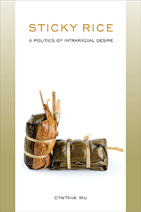

<HTML><head><script> (function(i,s,o,g,r,a,m){i['GoogleAnalyticsObject']=r;i[r]=i[r]||function(){  (i[r].q=i[r].q||[]).push(arguments)},i[r].l=1*new Date();a=s.createElement(o),  m=s.getElementsByTagName(o)[0];a.async=1;a.src=g;m.parentNode.insertBefore(a,m)   })(window,document,'script','//www.google-analytics.com/analytics.js','ga');   ga('create', 'UA-43183130-1', 'temple.edu');   ga('send', 'pageview'); </script><title>Cynthia Wu: Sticky Rice - Print</TITLE><link rel="stylesheet" href="../general.css" type="text/css"><SCRIPT LANGUAGE = JAVASCRIPT></SCRIPT></HEAD><BODY LINK="#3152A5" VLINK="#3152A5" ALINK=Gray BGCOLOR=White><CENTER><P CLASS=intro><br>Creating a queer genealogy of Asian American literary criticism<br><br></P></CENTER><br>&nbsp;<!--none//--><Table width="100%" border=0 cellspacing=5><tr><td width="175" align="center"></td><td><h1 class = "booktitle">Sticky Rice</h1> <h1 class = "subtitle">A Politics of Intraracial Desire</h1><h3 class="author">Cynthia Wu </h3><p class="info">paper EAN: 978-1-4399-1582-0 (ISBN:1-4399-1582-2)</br>$29.95, Sep 18, <font color=#990033>Not Yet Published Preorder</font><br><p class="info">cloth EAN:  978-1-4399-1581-3 (ISBN:1-4399-1581-4)</br>$94.50, Sep 18, <font color=#990033>Not Yet Published Preorder</font><br><p class="info">Electronic Book EAN: 978-1-4399-1583-7 (ISBN:1-4399-1583-0)</br>$29.95, Sep 18, <font color=#990033>Not Yet Published Preorder</font><br><p class="info">208 pp, 6 x 9, </p></td></tr></table></P></td></tr></table><BR><BLOCKQUOTE></BLOCKQUOTE><P><P><p>Cynthia Wu's provocative <i>Sticky Rice </i>examines representations of same-sex desires and intraracial intimacies in some of the most widely read pieces of Asian American literature. Analyzing canonical works such as John Okada's <i>No-No Boy</i>, Monique Truong's <i>The Book of Salt</i>, H. T. Tsiang's <i>And China Has Hands</i>, and Lois-Ann Yamanaka's <i>Blu's Hanging</i>, as well as Philip Kan Gotanda's play, <i>Yankee Dawg You Die,</i> Wu considers how male relationships in these texts blur the boundaries among the homosocial, the homoerotic, and the homosexual in ways that lie beyond our concepts of modern gay identity.<br/><br/>The "sticky rice" of Wu's title is a term used in gay Asian American culture to describe Asian American men who desire other Asian American men. The bonds between men addressed in <i>Sticky Rice</i> show how the thoughts and actions founded by real-life intraracially desiring Asian-raced men can inform how we read the refusal of multiple normativities in Asian Americanist discourse. Wu lays bare the trope of male same-sex desires that grapple with how Asian America's internal divides can be resolved in order to resist assimilation and coalition building.<br><P CLASS="top"><A HREF="#top">BACK TO TOP</A></P></p><P></p><p></b></p><BR><p></p></P><BR>&nbsp;<p><P><H2  class="inpageheading"><A NAME="author bio"></a>About the Author(s)</H2><p><b>Cynthia Wu</b> is an Associate Professor of Gender Studies at Indiana University. She is the author of <i>Chang and Eng Reconnected: The Original Siamese Twins in American Culture</i> (Temple).<br><P CLASS="top"><A HREF="#top">BACK TO TOP</A></P></P><p><h2 class="inpageheading"><a name="subjects"></a>Subject Categories</h2> <p><a href="http://www.temple.edu/tempress/literature.html" target="_top">Literature and Drama</a> <br><a href="http://www.temple.edu/tempress/asian_amer.html" target="_top">Asian American Studies</a> <br><a href="http://www.temple.edu/tempress/sexual.html" target="_top">Sexuality Studies/Sexual Identity</a> <br><a href="" target="_top"></a> <br><a href="" target="_top"></a> </p></p><P><h2 class="inpageheading">In the Series</h2><p><a target="_top" href="http://www.temple.edu/tempress/asam_history.html" OnMouseOver="window.status='Click for other books in this series!';return true;"OnMouseOut="window.status=" ><i>Asian American History and Culture</i></a></P><p><p>Founded by Sucheng Chan in 1991, the Asian American History and Culture series has sponsored innovative scholarship that has redefined, expanded, and advanced the field of Asian American studies while strengthening its links to related areas of scholarly inquiry and engaged critique. Like the field from which it emerged, the series remains rooted in the social sciences and humanities, encompassing multiple regions, formations, communities, and identities. Extending the vision of founding editor Sucheng Chan and emeriti editor Michael Omi, David Palumbo-Liu, K. Scott Wong and Linda Trinh Võ, series editors Cathy Schlund-Vials, Rick Bonus, and Shelley Sang-Hee Lee continue to develop a foundational collection that embodies a range of theoretical and methodological approaches to Asian American studies.</p></P></P></P><P>&nbsp;</P><font face="Arial" size="1"><a href="copyright.html" OnMouseOver="window.status='Web Copyright Policy';return true;" OnMouseOut="window.status=''" TITLE="Web Copyright Policy">&copy;</a> 2018 <a href="http://www.temple.edu" target="new" OnMouseOver="window.status='Link to Temple University home page';return true;" OnMouseOut="window.status=''" TITLE="Link to Temple University home page">Temple University</a>. All Rights Reserved. This page: <a href="http://www.temple.edu/tempress/titles/2486_reg.html"OnMouseOver="window.status='Link to the book page';return true;" OnMouseOut="window.status=''" TITLE="Link to the book page">http://www.temple.edu/tempress/titles/2486_reg.html.</a></font></BODY></HTML>                    
